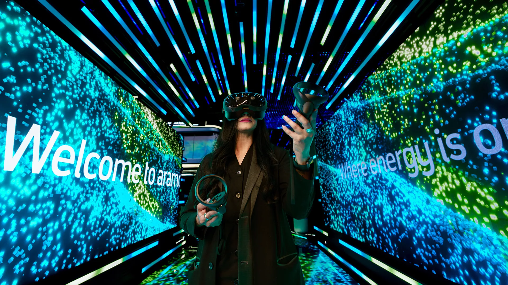

قادمة · فعالية
LEAP 2026
يجمع مؤتمر LEAP 2026 في الرياض قادة التقنية والشركات الناشئة والمستثمرين وصناع السياسات والمبتكرين من 31 أغسطس إلى 3 سبتمبر 2026، مع جدول حي موثق للجلسات والقاعات.
المدينةالرياض
البداية٣١/٠٨/٢٠٢٦، ١١:٠٠ ص
النهاية٠٣/٠٩/٢٠٢٦، ٩:٠٠ م
الحالة الحيةجاري حساب الوقت...
8/8
جاهزوقت واضح
جاهزمصدر موثوق · مصدر معتمد
جاهزمدينة محددة
جاهزموقع قابل للوصول
جاهزأجندة متعددة الجلسات
جاهزرابط مشاركة
جاهزتصنيف مفهوم
جاهزجمهور مناسب
ما يحتاجه الزائر بسرعة
متى تبدأ LEAP 2026؟
تبدأ LEAP 2026 في ٣١/٠٨/٢٠٢٦، ١١:٠٠ ص وتنتهي في ٠٣/٠٩/٢٠٢٦، ٩:٠٠ م بتوقيت السعودية.
أين تقام LEAP 2026؟
تقام الفعالية في الرياض، Riyadh Exhibition & Convention Centre, Malham.
هل المعلومات موثوقة؟
تعتمد EventLive على LEAP 2026 Official أو رابط دليل ظاهر في صفحة الفعالية، مع إبقاء رابط المصدر للمراجعة.
هل يوجد جدول حي لهذه الفعالية؟
نعم، تعرض الصفحة جدولًا حيًا أو جلسات قابلة للمتابعة حسب الوقت.
محاور البرنامج
الأجندة الرسمية لـLEAP 2026: 127 جلسة مكتملة الوقت ضمن 31 أغسطس إلى 3 سبتمبر 2026.
المدة31 أغسطس إلى 3 سبتمبر 2026
المزودTahaluf
الأهداف
- مساعدة الزائر على اختيار الجلسات المناسبة قبل الوصول إلى مقر LEAP.
- عرض حالة كل جلسة وموعدها وقاعتها بحسب توقيت الرياض.
- ربط كل جلسة بصفحتها المنشورة في الأجندة الرسمية.
المميزات
- 127 جلسة بوقت بداية ونهاية
- 9 قاعة ومسرح
- 15 نوعًا برامجيًا
- تتغير حالة كل جلسة تلقائيًا بين قادمة وجارية ومنتهية بتوقيت الرياض
المتطلبات
- ساعات استقبال الجمهور من 12 ظهرًا إلى 9 مساءً يوميًا.
- راجع الأجندة الرسمية قبل الحضور لاحتمال تحديث القاعة أو المتحدث أو التوقيت.
برنامج موثق
الجدول الحي
127 جلسة · 9 قاعات · بتوقيت الرياض
يجري الآنلا توجد جلسة جارية الآن
التالييُحدد حسب الوقت الفعلي
127 جلسة
Am Cham
Americas at LEAP
MC Welcome
Lara Lewington، Spencer Kelly
Day 1-Welcome Address
Ninyaz Aziza
Smart Cities Professionals
MC Welcome: “The New Era of Builders”
Ozan Sonmez
Women in Tech
Sports as an Asset Class: Investing in Teams, Tech & Talent
Charlie Stebbings، Finn Hatherell، Mustafa Ghouse
Keynote by the CEO of Aramco Stadium
Rockets, Robots, and Data Centers: How To Find And Attract The Best Cutting Edge Deep Tech Companies To KSA
Steve Jacobs، Alex Fielding
Ministry of National guard
Let's Venture + Saudi Bridge
Estonia at LEAP (1)
The Wealth You Build vs. The Wealth You Keep: New Models of Generational Capital
Tom Zheng
From Screen to Scale: Why Distribution makes or breaks Content
Closing Remarks
East at LEAP
MC Welcome: “Where Scale Gets Built: Turning Movement into Momentum”
Ozan Sonmez
AI Enthusiasts and professionals
Day 2-Welcome Address
Ninyaz Aziza
Building a Motorsport Nation: Inside Saudi Arabia’s Integrated Sports Ecosystem
Shaima Saleh AlHusseini
Founder to Giant: What Breaks Between $10M → $50M → $100M ARR
Jonathan Keidan، Amal Dokhan
Masterclass: Creativity, Experience, Innovation, and Play
Jared Bendis
Building a Global Brand from Scratch: The LAFC Journey
Rich Orosco، David Dybman
Beyond the US Exit: The Full-Cycle Emerging Markets Era
Max Gurvits، Priscilla Elora Sharuk، Renee Pan
From Riyadh to the World: Building Global Games and Shaping a Culture of Game Development
Yannick Theler
Welcome from MC
Investing in Play
Rema Alyahya، Eric Husny، Brett Krause، Nika Nour
From The Pitch to the Paddock: How Technology is Redefining Global Sport
Tareq Alangari
The AI Operating Model - From Strategy to Sustainable Execution
Munu Gandhi
Sovereign GenAI in Production: From Strategy to Scaled Deployment
Anton Dzhoraev
NHC (2)
Sovereign AI and the Future of Global Intelligence
Dinakar Munagala، Ray Pang
Science fiction in films and inspiring near futures
David Sheldon-Hicks
Founder–Founder Leverage Circles: What I’d Do Differently at 10, 50, 200 People
Alex Wheldon، Artur Kiulian
Cisco
Lead with Personality: a true story about building community through authenticity
Chunkz
Reserved for Globant
LP-GP Quickfire
Ioto Iotov
Data-Driven Mass Participation and the Future of Urban Health
Keynote
Fireside chat
Patrick Pugh
Sovereign Power for Sovereign AI: Energy as the New Strategic Moat
Lisheng Wang
Designing the next reality: where film, games & culture converge
David Sheldon-Hicks، Faisal Baltyuor
Boardroom Intelligence 2.0: Harnessing AI for Oversight, Agility & Edge
Laurie Fuller، Nollie Maoto
Community-Powered Capital: The Super Angel Model That Wins Rounds
Rupa Ganatra Popat
ISP : Investor & Founder Power Hour
Immersive Experiences that will Transport you to the Greatest Sporting Moments in History
Richard Ayers
ISP: founder's only brunch
Workshop
Inside the Arabic AI Models Stack - Real Enterprise Use Cases
Nour Taher
Welcome Note
From Orbit to Operations: Delivering Multi-Domain Capabilities for National Security
Shaima Saleh AlHusseini
GameX Creative Professionals
Workshop
Day 3- Welcome Address
Ninyaz Aziza
The FA Blueprint
Mark Bullingham، Peter Hutton
The Founder’s Survival Loop: Energy, Psychology & Leading Under Extreme Pressure
Julian Issa، Zakaria Hersi
Recipes for innovative storytelling: Abir El Saghir's journey from social creator to animated star
Abir El Saghir
Tim Krul’s Blueprint for Career Longevity
Tim Krul، Finn Hatherell
Welcome from MC
Accenture
Transportation as a Catalyst for Economic Diversification
Mitchell Price، Dr Omaimah Bamasag، Youssef Abouseif، Umar Zakir Abdulhamid، Will Peters
The Two-speed Ad Market - Legacy Gloom, AI-driven Digital Boom
Sir Martin Sorrell
Keynote
Driving New Age Fans and Eyeballs To Sports
Adrian Wells، Daniel Ginger
The Investing Machine: How AI and Data Are Rewriting the VC Playbook
Demo
Atul Gupta, MD
Corporate Venture Building as a Growth Engine
Telecom Professionals
Designing the Game Behind the Game
Charity Joy
The Data Value Chain: Acquisition, Consolidation, and Monetisation of data in Sport
Peter Hutton، Javier Sobrino
From Localization to Globalization: Building a World-Class Auto Hub
Dr. Andreas Gissler، Michael Mueller، Christopher Goodey، Majid Matbouly، Faisal Sultan
Saudi Gaming Founders Present
Musab Almalki، Hani Hesham، Meaad Aflah
Vision 20XX: Visionary Capital for 20–50-Year Bets
Charles Beyrouthy
Building Data-Native Sporting Ecosystems
Matt Roberts، Thomas de Buhr، Sayed Farouk
AI at the Wheel: Building Trust, Safety, and Scale for Autonomous Mobility
Dr. Rahima Yakoob، Ann Yu Shi، Aravind Kailas، Luis De La Cruz، Henry Bzeih
Close to Home: Diaspora Capital Building the Next Generation of Global Companies
Bas Godska، Chanmeet S. Narang، Valentina Primo
Health tech Professionals
Leveraging Sports to Turn Schools and Communities into Centers of Play and Wellness: Lessons from 2 Decades in Sports
Saumil Majmudar
Regenerative Returns: Designing Sustainable Ecosystems
Heba Ali، Ertan Can
In conversation with
Steve Nouri
From Agents to Architects: How Talent Managers are Shaping World Sport IP
Tuhin Mishra
Letters to Our Future LPs and Founders
Eric Martineau-Fortin، Reem Wyndham
Delivery unmanned: the intersection of AI and Robotics in Logistics
Spencer Horne، Will Zhao، Alan NG، Junwei Yang
Changing the Playbook: Rewriting the Fan Experience Through Sports Tech
Saudi as a Launchpad: Why ‘Build Here, Scale Everywhere’ Works
Jussof Breshna
Building Africa's Gaming Ecosystem Through Local Stories
Hugo Obi
Lessons learned and the next evolution of public transport
Ali Alshehri، Taavi Roivas، Nicolas Letendre، Yousof Alsatom، Ahmed AbuTabl
The New Architects of Sport: Redefining Accessibility, Training, and Community
Dr. Sam Impey، David Deneher، John Hyland
She Plays
Charity Joy، Rema Alyahya، Meaad Aflah
Fueling the Algorithm: Where Performance Nutrition Meets Real-Time Data
Mark Gorski
The Next Evolution of Air Mobility: From Cleaner Fuel to Smarter Skies
Dr. Gerald Wissel، Victoria Coleman، Parmjit Dhanda، Lionel Sinai-Sinelnikoff
EU at LEAP
You Don’t Exit a Legacy: Building Forever Firms
Henadi Al-Saleh
Welcome Remarks
Sustainability in Motion: How Water Sports are Driving the New Marine Economy
Thamer Habis
Day 4 - Welcome Note
Day 4- Welcome Address
Ninyaz Aziza
Bug Bounty Program Results & Recognition by Communications, Space and Technology Commission (CST)
Liquidity Is a Product: Designing Exit-Readiness (IPO, M&A, and Secondaries)
SC Moatti، Ahmed El Hamawy
Sol Campbell’s Second Half: Bridging Football Intelligence and Artificial Intelligence
From Photographer to Founder: Reclaiming Creativity in the Age of Algorithms
Alan Schaller
The Hydrogen Pioneer: Defining the Next Decade of Clean Power
Ali Russell
GCC at LEAP
The Decisions You’ll Regret Not Making in the Next 18 Months
Sameer Sait، Arwa Alhamad، Sultan Altukhaim
Welcome address
Emerging Market Alphas: Africa, South Asia, LATAM, GCC: New Money, New Models: The New Hubs of Global Wealth
Zachariah George
Session Presented by Cisco
The Builders Behind the Builders
Rick Rasmussen، Samantha Evans، Emon Shakoor
East Meets West: The New Roadmap for Global Brand Expansion
Mikey Rocha Keys، Charlie Stebbings
Kill Your Darlings: The Security Tools You Should Probably Turn Off
Nishanth Kumar Pathi، Abdullah Aljaber
Software Developers
Digital Assets for Sports Impact Powered by AI
Philipp Berkessy
Content to Capital: Monetizing Fame in the AI Age
Jeff Turnbull
Big Talk: Post-Quantum Security Starts Now
Areiel Wolanow
Session Presented by Fortinet
Fintech Professionals
How Gaming and AI Are Reinventing The Fashion Industry
Delz Erinle، Ifeanyi Nwune
When Policy Meets the Breach - Who Really Owns the Risk?
Mohammed Almozaiyn، Dr Petra Janez، Abdulrahman Almusfir، Betania Allo
Beyond the Prompt - The Future of Personalized AI Agents
Misbah Uraizee
After AI: What the Next Tech Wave Will Look Like
BGen. Robert Mansour
MEWA
Session Presented by Accenture
End of LEAP Sports Hub & Closing Remarks
Mapping Your Real Attack Surface
Prof. Dr. Mohammed Abdur Rahman
Governing Quantum Cyber Risk: A Board-Level Imperative
Yusuf Azizullah